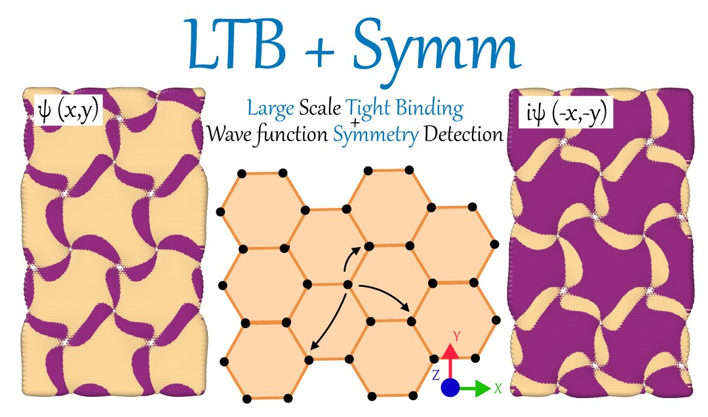

Welcome to LB-Symm’s documentation!¶
{kind=link}
Note
This project is under active development. Feel free to contact us directly for any question, we can give you advise if this code is suitable for your project. Email: khsrali@gmail.com
Note
Possible collaboration with related packages are welcome!
LTB-Symm¶
LTB-Symm is a publicly available code that does two things: large scale tight-binding (LTB) calculation of 2D materials, and checks topological symmetries (Symm) of their wave functions.
Who benefits¶
LTB-Symm is an ideal choice for researchers looking for a ready-to-use, easy-to-modify, and MPI-implemented TB code for large scale 2D structures. Up to 1 (0.1) Milions atoms for limited (vast) K-points, is (easily) managable.
Specially communities who deal with twisted bilayer/multilayer graphene.
- All input needed are:
Coordinate of atoms/orbitals, e.g. lammpstrj, XYZ
Functional form of Hamiltoninan
- And possible outputs are:
Bands structure,
Density of States,
Check topological symmetries of wave functions.
Shape of the wavefunction
Bold features¶
MPI implemented, able to run on HPC clusters.
Object Oriented, easy to modify for multi purpose.
Efficient, calculate only a few energy levels that are needed.
Ideal for 2D materials, e.g. graphene.
Many routings are automated.
The only open-source code that we know of which is able to investigate group symmetries in this way.